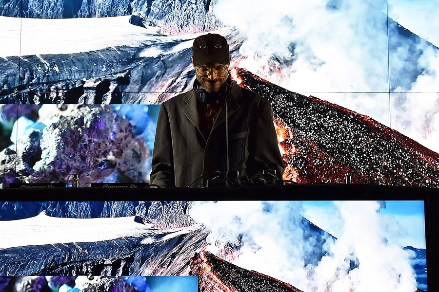

Joakim joins Parklife + Brisbane locals announced


_%C2%B7_%C2%A9_Danilo_Sam%C3%A0.jpg){kind=link}
For anyone who’s hanging for more Parklife info, this should sate your hunger as the ‘Godfather of French Electro’ Joakim will be joining the already massive lineup, along with the curtain falling on the local acts who will be playing at the Brisbane event. The rest of the country will have to wait until the end of the week to find out the local lineup for their respective cities, but it’s possible the Brisbane announce is a good sign of what we can expect.
Joakim wasn’t branded the “Godfather of French Electro” by I-D Magazine for nothing. He’s indeed considered royalty in the Parisian electronic scene, and while fellow Parklife performers like Busy P might be dominating the limelight in his country’s scene, Joakim is the quiet achiever with his excellent Tigersushi, a ‘renaissance man’ to designing his own artwork and producing various bands as well as an eclectic approach to DJing that takes in disco, acid house and electro.
Check out the second round of acts for Brisbane’s Parklife below, and be back at ITM on Friday for the full national announce!
Parklife Brisbane 2nd Round Announcement:
Joakim
The Stafford Brothers & Timmy Trumpet
Miami Horror
Purple Sneakers DJs
Afro Dizzi Act
Yacht Club DJs
The Cairos
Sampology
Baby Gee
Aniki
Tim Fuchs
Elke
Junkbeats
Charlie Hustle
Mitzi
Ember
Youth
Fans Djs
Dz
Yokoo
Operon
Dubmarine
The Loops Of Fury
Tigermoth
Lowkey+Nude
Doom Doom
inthemix is a proud presenting partner of Parklife in 2009! Keep your eyes peeled to our Festival Page at inthemix.com.au/parklife
Sat 26th Sep – Botanic Gardens & Riverstage, Brisbane
Sun 27th Sep – Wellington Square, Perth
Sat 3rd Oct – Birrarung Marr, Melbourne
Sun 4th Oct – Kippax Lake, Moore Park, Sydney
Mon 5th Oct – Botanic Park, Adelaide